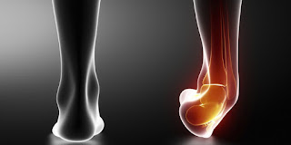

Una de las lesiones más comunes en las personas que practican deporte es el esguince de tobillo. Si eres de los que tienen tendencia a sufrirlos y una simple torcedura te provoca uno. En nuestra clínica te ofrecemos el tratamiento podológico que puedes seguir para tratar de evitar esta dolorosa y molesta lesión.

Si sufres de forma repetida esguinces en los tobillos es muy posible que tengas algún problema en los ligamentos de la zona que hace que tu pie se mantenga con una estabilidad normalizada. ¿Qué tratamiento podológico se podría aportar para evitar la repetición de la lesión por culpa de la laxitud de mis ligamentos?

Nuestros podólogos pueden reconocer el problema mediante una breve exploración y determinar el estado del ligamento mediante las pruebas complementarias que estime oportunas solicitar. También puede recomendarte una pauta de ejercicios para trabajar la musculatura del tobillo, recuperar la fortaleza y flexibilidad de los ligamentos que hará descender la posibilidad de sufrir nuevo un esguince de tobillo, así como elementos externos como vendajes funcionales o plantillas a media que ayudarán a relajar la zona de conflicto.